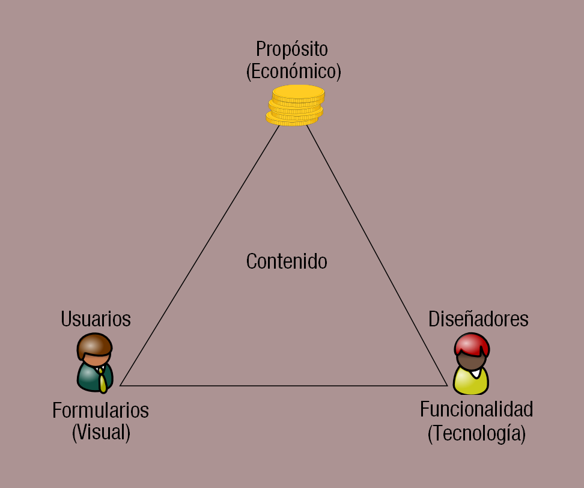

Áreas del diseño Web
Hay cinco áreas que cubren la mayor parte de las facetas del Diseño Web:
- Contenido: incluye la forma y organización del contenido del sitio. Esto puede abarcar desde cómo se escribe el texto hasta cómo está organizado, presentado y estructurado usando tecnologías de marcas como HTML.
- Visual: hace referencia a la plantilla empleada en un sitio web. Esta plantilla generalmente se genera usando HTML, CSS o incluso Flash y puede incluir elementos gráficos para decoración o para navegación. El aspecto visual es el aspecto más obvio del Diseño Web, pero no es la única disciplina o la más importante.
- Tecnología: aunque muchas de las tecnologías web como HTML o CSS entran dentro de esta categoría, la tecnología en este contexto generalmente hace referencia a los diferentes tipos de elementos interactivos de un sitio web, generalmente aquellos construidos empleando técnicas de programación.
- Distribución: la velocidad y fiabilidad con la que un sitio web se distribuye en Internet o en una red interna corporativa está relacionado con el hardware/software utilizado y el tipo de arquitectura de red utilizada en la conexión.
- Propósito: la razón por la que un sitio web existe, generalmente está relacionada con algún aspecto de tipo económico. Por lo tanto este elemento debería considerarse en todas las decisiones que tomemos en las diferentes áreas.

El porcentaje de influencia de cada una de estas áreas en un sitio web, puede variar dependiendo del tipo de sitio que se está construyendo. Una página personal generalmente no tiene las consideraciones económicas que tendría una web que va a vender productos en Internet.
Una forma de pensar en los componentes del Diseño Web es a través de la metáfora de la pirámide mostrada en la figura anterior. El contenido proporciona los ladrillos que formarán la pirámide, pero la base de la pirámide se fundamenta tanto en la parte visual como en la parte tecnológica y con el punto de vista económico puesto como objetivo o propósito final en la mayoría de los casos.
Aunque la analogía de la pirámide es una forma un poco abstracta de describir el Diseño Web, es una herramienta que nos permite visualizar la interrelación de los diferentes componentes de la construcción Web.
Hojas de Estilo en Cacada (Cascading Style Sheet)